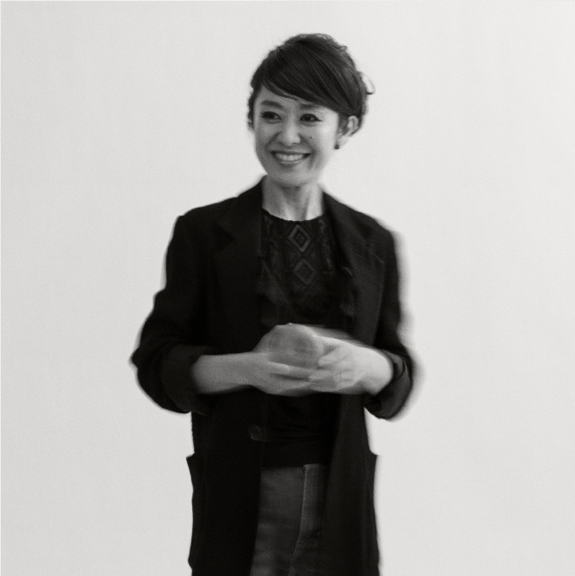

Profile
-
大塚 広子（DJ/音楽ライター/プロデューサー）
ジャズをメインにDJ歴20年。アナログレコードにこだわった1960代以降のブラックミュージックの音源発掘から、現代ジャズ、クラブミュージックまで繋ぎ、ワン&オンリーな"JAZZのGROOVE"を呼び起こすDJ。徹底したレコードの音源追求と、繊細かつ大胆なプレイで全国的な現場の支持を得て、ニューヨーク、スペインの招聘、アジア最大級ジャズ・フェスティバル「東京ジャズ」にDJとして初の出演、2度の「FUJI ROCK FESTIVAL」、「Blue Note JAZZ FESTIVAL in JAPAN」等出演。クラブシーンのみならず、自らの提案で新宿PIT INNへDJ導入するなど、老舗ジャズ喫茶やジャズライヴハウスで評論家やミュージシャンとのコラボレーションを積極的に行い、柔軟なセンスで音楽の楽しみ方を提示している。
DJ活動の他、メディアでの執筆、選曲監修、伊勢丹新宿店をはじめ企業の音楽イベントプロデュース、自身のレーベルKey of LIfe+を主宰。現在生まれる音楽を審美眼を活かした切り口でまとめあげたコンピレーションシリーズ（PIECE THE NEXTシリーズ）や、気鋭ミュージシャンを束ねたプロデュース・ユニット（RM jazz legacy）のディレクション、リリース活動なども行う。DeAGOSTINIジャズレコードコレクション(2016年創刊号及び、書店PR文)、朝日新聞(2017年7月「ジャズと私」コーナー)、読売新聞（2018年2月「くらし家庭記事」）などメディアにおいても、ジャズ及びアナログレコード普及におけるオピニオンリーダーとして活躍。二児の母。
-
Hiroko Otsuka（DJ / Producer / Music Journalist）
DJ Otsuka has over 20 years experience in the Japanese club and jazz scene, playing such events as the Blue Note Jazz Festival in Japan, the Tokyo Jazz Festival and the Fuji Rock Festival, plus the long running jazz/funk DJ session CHAMP at the legendary Tokyo venue The Room. She has also been the opening DJ for visiting acts such as Chris Dave, Derrick Hodge and Mark Guiliana.
She regularly contributes to local music publications such as JAZZ JAPAN, Jazz Perspective, LATINA, CD Journal, Wax Poetics Japan, with articles on rare jazz vinyl, new album reviews and interviews with visiting musicians such as Kamasi Washington and Makaya McCraven.
Her compilation series 'PIECE THE NEXT' features a wide range of contemporary Japanese jazz musicians, and in 2015 she produced the all-star group RM Jazz Legacy's debut album, followed up by '2' in 2016.
She is currently working on two new compilations, including one of world music grooves from around the globe.
Hiroko lives in Tokyo with her two children and several thousand records.

Work


Schedule
イベントなどのスケジュールはこちらよりご確認ください
Blog
Contact
アーティストへの依頼・質問、ブッキングなど、各種お問い合わせはこちら